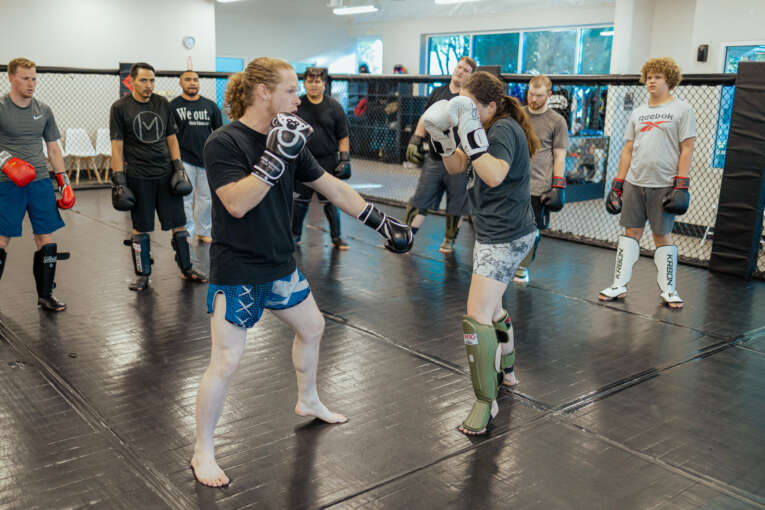
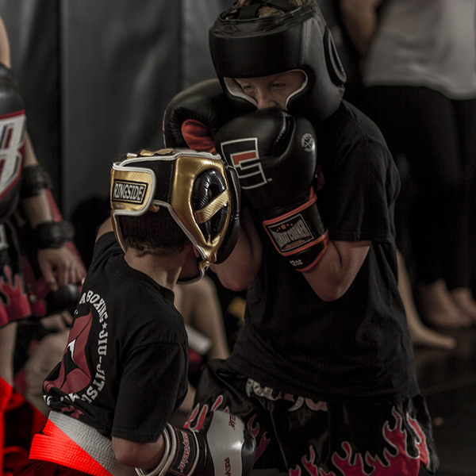

Tell us your goal
Fitness, skill, competition, confidence or something you cannot name yet.
Utah County's Combat Studio
Structured martial arts and conditioning for beginners, experienced athletes and competitors in Orem, Utah.
Help me choose a programOne Gym / Many Starting Points
Wasatch brings Muay Thai, Brazilian Jiu-Jitsu, boxing, MMA, women's combat, youth training and strength work into one coaching environment.
You do not need to arrive in shape or know the rules. You need a useful first step and coaches who can show you the next one.


A Clear Route In
Fitness, skill, competition, confidence or something you cannot name yet.
We connect your interest and experience level to an appropriate program.
Learn fundamentals, understand the culture and add intensity over time.
Know Before You Go
A beginner guide to clothing, equipment, pacing and what coaches expect.
How classes scale for real bodies and different starting points.
Find Your Starting Point